pacman::p_load(DeclareDesign, tidyverse, future, future.apply)
library(fabricatr)
library(randomizr)
library(estimatr)
set.seed(12345)
theme_set(theme_minimal(base_size = 14))Quant II
Lab 9
Today’s Agenda
- Experiment
- DeclareDesign
- adapted from https://declaredesign.org
- Covariate adjustment
Purpose of DeclareDesign
Simulation based toolkit
- make assumptions explicit,
- define the estimand clearly,
- declare how data are generated,
- declare how the answer will be computed,
- diagnose whether the design performs well,
- redesign when it does not.
DecalreDesign Workflow
- start with the research question,
- write down the causal model,
- declare the estimand,
- declare assignment and measurement,
- declare the estimator,
- diagnose bias, RMSE, coverage, and power,
- redesign over the choices we actually control.
Setup
Baseline
N <- 300
tau <- 0.20
x_strength <- 1.00
base_dd <-
declare_model(
N = N,
U = rnorm(N),
potential_outcomes(Y ~ tau * Z + U)
) +
declare_inquiry(ATE = mean(Y_Z_1 - Y_Z_0)) +
declare_assignment(Z = complete_ra(N = N, prob = 0.5)) +
declare_measurement(Y = reveal_outcomes(Y ~ Z)) +
declare_estimator(Y ~ Z, inquiry = "ATE", label = "DIM")
base_dd
Research design declaration summary
Step 1 (model): declare_model(N = N, U = rnorm(N), potential_outcomes(Y ~ tau * Z + U))
Step 2 (inquiry): declare_inquiry(ATE = mean(Y_Z_1 - Y_Z_0)) -------------------
Step 3 (assignment): declare_assignment(Z = complete_ra(N = N, prob = 0.5)) ----
Step 4 (measurement): declare_measurement(Y = reveal_outcomes(Y ~ Z)) ----------
Step 5 (estimator): declare_estimator(Y ~ Z, inquiry = "ATE", label = "DIM") ---
Run of the design:
inquiry estimand estimator term estimate std.error statistic p.value conf.low
ATE 0.2 DIM Z 0.317 0.115 2.76 0.00622 0.0905
conf.high df outcome
0.543 298 Y
Parameters saved in design environments:
name value_str steps
N 300 1
tau 0.2 1Diagnose the baseline design
diagnosis_base_dd <- diagnose_design(base_dd)head(diagnosis_base_dd$simulations_df) design sim_ID inquiry estimand estimator term estimate std.error statistic
1 base_dd 1 ATE 0.2 DIM Z 0.1814293 0.1136604 1.5962404
2 base_dd 2 ATE 0.2 DIM Z 0.1362970 0.1178494 1.1565354
3 base_dd 3 ATE 0.2 DIM Z 0.2617360 0.1121355 2.3341041
4 base_dd 4 ATE 0.2 DIM Z 0.3324263 0.1160182 2.8652939
5 base_dd 5 ATE 0.2 DIM Z 0.0440585 0.1214382 0.3628059
6 base_dd 6 ATE 0.2 DIM Z 0.2419235 0.1168504 2.0703688
p.value conf.low conf.high df outcome
1 0.111495018 -0.04224941 0.4051081 298 Y
2 0.248388509 -0.09562547 0.3682194 298 Y
3 0.020254758 0.04105815 0.4824138 298 Y
4 0.004462559 0.10410747 0.5607450 298 Y
5 0.717007075 -0.19492664 0.2830436 298 Y
6 0.039278876 0.01196692 0.4718800 298 Yhist(diagnosis_base_dd$simulations_df$estimate)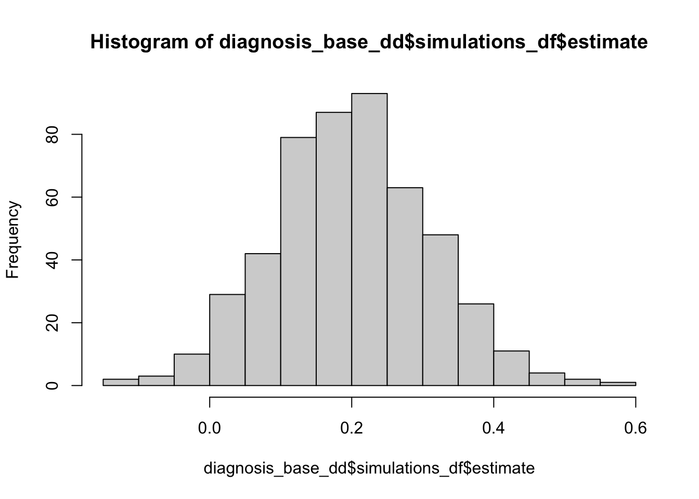
hist(diagnosis_base_dd$simulations_df$p.value)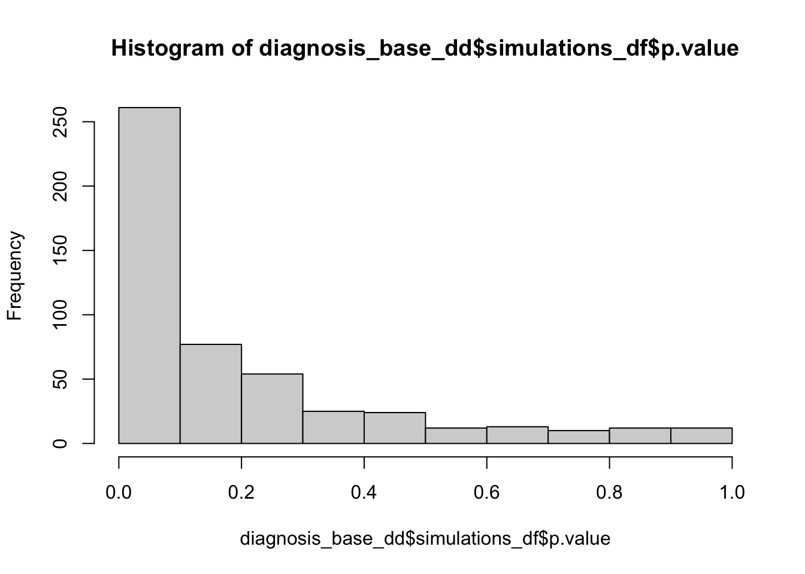
diagnosis_base_dd$diagnosands_df design inquiry estimator outcome term mean_estimand se(mean_estimand)
1 base_dd ATE DIM Y Z 0.2 0
mean_estimate se(mean_estimate) bias se(bias) sd_estimate
1 0.2007818 0.005600077 0.0007818011 0.005600077 0.1097542
se(sd_estimate) rmse se(rmse) power se(power) coverage se(coverage)
1 0.003875827 0.1096471 0.003830824 0.41 0.02455436 0.956 0.008163258
n_sims
1 500https://book.declaredesign.org/declaration-diagnosis-redesign/diagnosing-designs.html#sec-ch10s2
redesign: Evaluating Multiple Designs
redesign over sample size
diagnosis_over_n <-
base_dd %>%
redesign(N = seq(100, 1000, by = 100)) %>%
diagnose_designs()diagnosis_over_n$diagnosands_df %>%
select(N, estimator, power, sd_estimate, rmse) N estimator power sd_estimate rmse
1 100 DIM 0.166 0.20770197 0.20759383
2 200 DIM 0.300 0.13941052 0.13927104
3 300 DIM 0.394 0.11634495 0.11639852
4 400 DIM 0.486 0.09158148 0.09179098
5 500 DIM 0.620 0.08817614 0.08809119
6 600 DIM 0.712 0.08293031 0.08298757
7 700 DIM 0.770 0.07300933 0.07314603
8 800 DIM 0.826 0.06977120 0.06972059
9 900 DIM 0.836 0.06915075 0.06915647
10 1000 DIM 0.908 0.05870963 0.05906799diagnosis_over_n$diagnosands_df %>%
ggplot(aes(x = N, y = mean_estimate, ymin = mean_estimate - 1.96 * sd_estimate, ymax = mean_estimate + 1.96 * sd_estimate)) +
geom_point(size = 4) +
geom_errorbar(width = 0, linewidth = 1) +
labs(
title = "95% CI",
x = "Sample size",
y = "Estimate") +
theme_bw()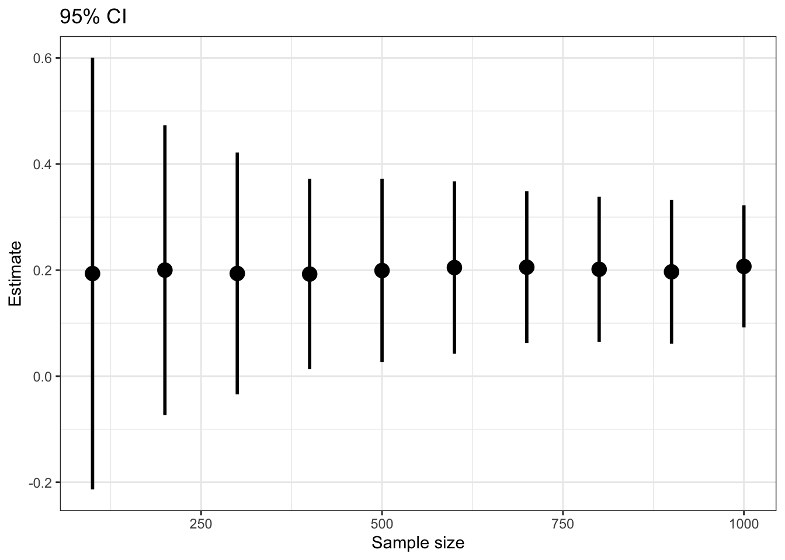
diagnosis_over_n$diagnosands_df %>%
ggplot(aes(x = N, y = power, color = estimator)) +
geom_line(linewidth = 1.1) +
geom_point(size = 2) +
labs(
title = "Power by sample size",
x = "Sample size",
y = "Power") +
theme_bw() +
geom_hline(yintercept = 0.8, linetype = "dashed") +
annotate("text", x = Inf, y = 0.8, label = "Power = 0.8", hjust = 1.1, vjust = 1.5)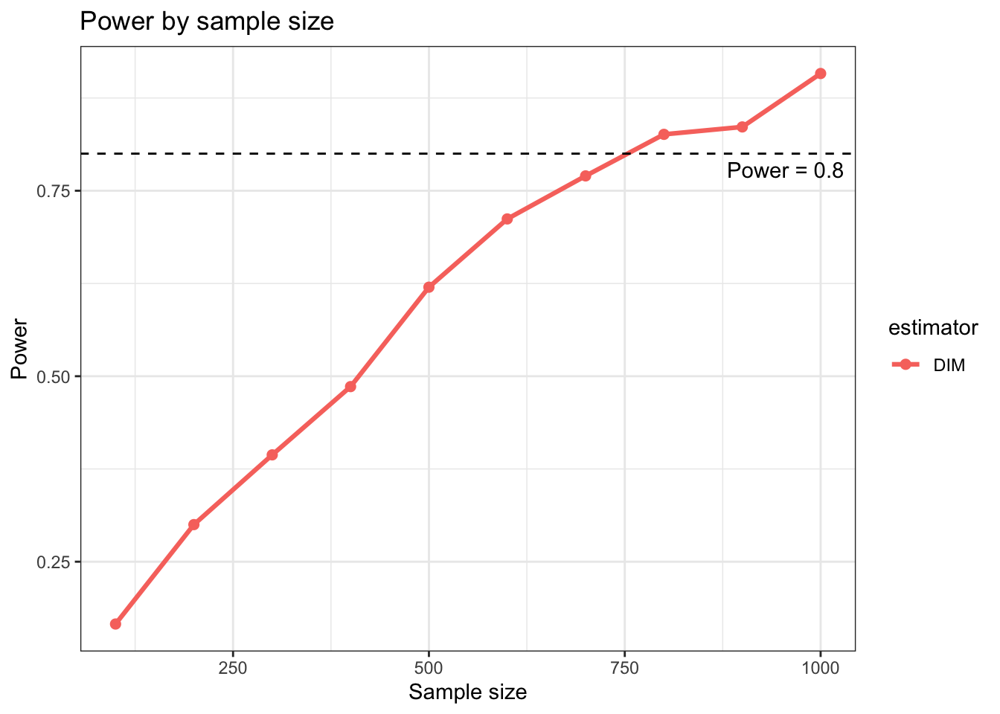
redesign the effect size
diagnosis_over_tau <-
base_dd %>%
redesign(
N = seq(100, 1000, 100),
tau = c(0.1, 0.2, 0.3)
) %>%
diagnose_designs()diagnosis_over_tau$diagnosands_df %>%
ggplot(aes(x = N, y = power, color = as.factor(tau))) +
geom_line(linewidth = 2) +
labs(color = "tau",
title = "Power by effect size") +
theme_bw() +
geom_hline(yintercept = 0.8, linetype = "dashed") +
annotate("text", x = Inf, y = 0.8, label = "Power = 0.8", hjust = 1.1, vjust = -0.5)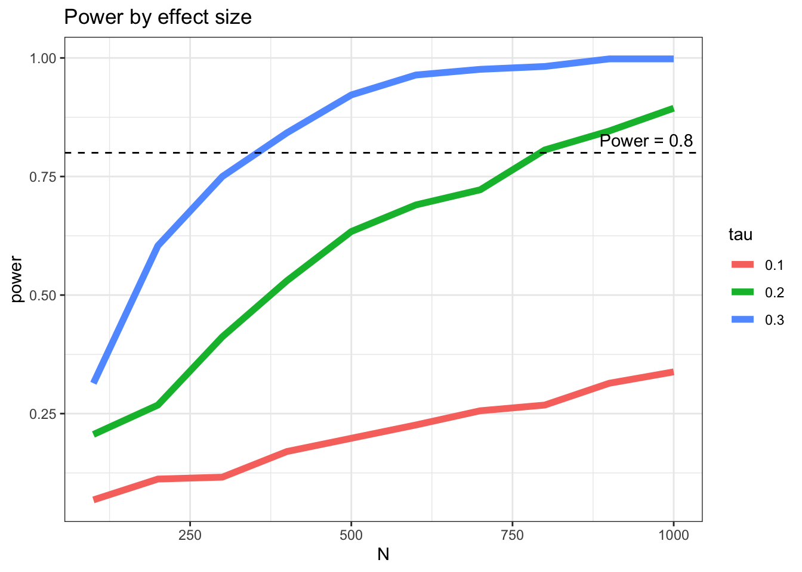
Covariate Adjustment
- Difference in means
- OLS with covariate adjustment
- Lin adjustment using
lm_lin()
adj_dd <-
declare_model(
N = N,
X = rnorm(N),
U = rnorm(N),
potential_outcomes(Y ~ tau * Z + x_strength * X + U)
) +
declare_inquiry(ATE = mean(Y_Z_1 - Y_Z_0)) +
declare_assignment(Z = complete_ra(N = N, prob = 0.5)) +
declare_measurement(Y = reveal_outcomes(Y ~ Z)) +
declare_estimator(Y ~ Z, inquiry = "ATE", label = "DIM") +
declare_estimator(Y ~ Z + X, .method = lm_robust, inquiry = "ATE", label = "OLS adjusted") +
declare_estimator(Y ~ Z, covariates = ~ X, .method = lm_lin, inquiry = "ATE", label = "Lin")redesign over covariate strength
diagnosis_adj <-
adj_dd %>%
redesign(
N = seq(100, 1000, by = 100),
x_strength = c(0, 0.5, 1.0, 1.5)
) %>%
diagnose_designs()diagnosis_adj$diagnosands_df %>%
ggplot(aes(x = N, y = sd_estimate, color = estimator)) +
geom_line(linewidth = 1.1) +
facet_wrap(~ x_strength, labeller = label_both) +
labs(
title = "Precision gains from covariate adjustment",
x = "Sample size",
y = "SD of estimate"
) + theme_bw()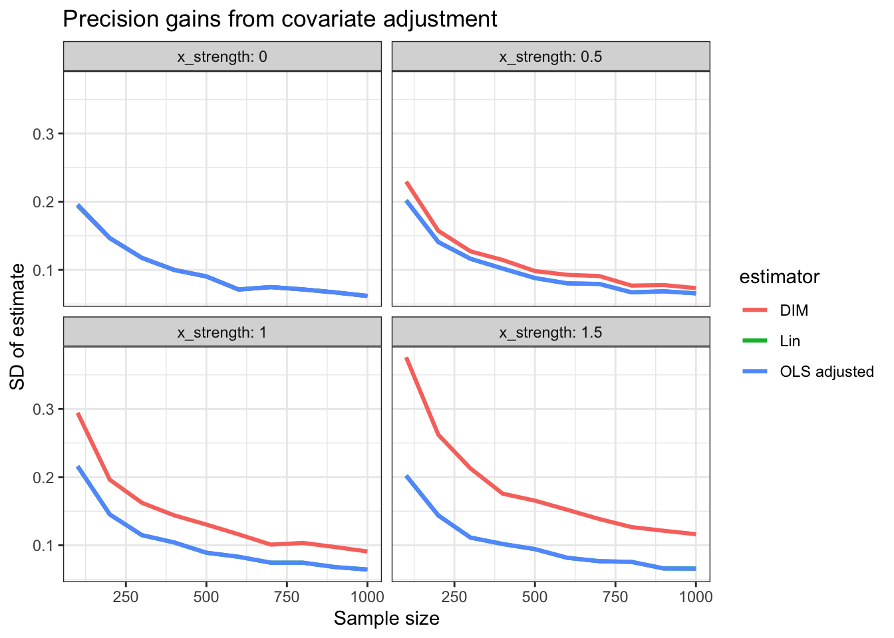
diagnosis_adj$diagnosands_df %>%
ggplot(aes(x = N, y = power, color = estimator)) +
geom_line(linewidth = 1.1) +
facet_wrap(~ x_strength, labeller = label_both) +
labs(
x = "Sample size",
y = "Power"
) +
theme_bw() +
geom_hline(yintercept = 0.8, linetype = "dashed") +
annotate("text", x = Inf, y = 0.8, label = "Power = 0.8", hjust = 1.1, vjust = -0.5)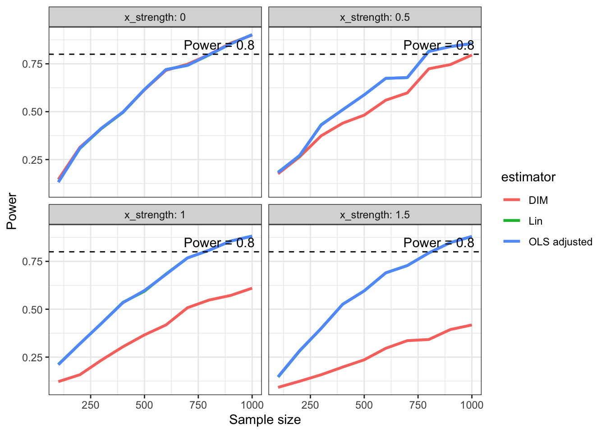
When OLS is less efficient than Lin
- Covariate slopes differ between treated and control potential outcomes,
- and assignment is imbalanced
N <- 400
tau <- 0.2
treatment_share <- 0.5
control_slope <- 0
treatment_slope <- 1
heterogeneous_slope_dd <-
declare_model(
N = N,
X = runif(N, min = -1, max = 1),
U = rnorm(N, sd = 0.25),
Y_Z_0 = control_slope * X + U,
Y_Z_1 = tau + treatment_slope * X + U
) +
declare_inquiry(ATE = mean(Y_Z_1 - Y_Z_0)) +
declare_assignment(Z = complete_ra(N = N, prob = treatment_share)) +
declare_measurement(Y = reveal_outcomes(Y ~ Z)) +
declare_estimator(Y ~ Z, inquiry = "ATE", label = "DIM") +
declare_estimator(Y ~ Z + X, .method = lm_robust, inquiry = "ATE", label = "OLS adjusted") +
declare_estimator(Y ~ Z, covariates = ~ X, .method = lm_lin, inquiry = "ATE", label = "Lin")heterogeneous_slope_diagnosis <-
heterogeneous_slope_dd %>%
redesign(
treatment_share = c(0.20, 0.35, 0.50),
control_slope = c(-1, 0, 1)
) %>%
diagnose_designs()heterogeneous_slope_diagnosis$diagnosands_df |>
ggplot(aes(x = treatment_share, y = sd_estimate, color = estimator)) +
geom_line(linewidth = 1.1) +
geom_point(size = 2) +
facet_wrap(~ control_slope, labeller = label_both) +
labs(
title = "Estimator precision under slope heterogeneity and imbalance",
x = "Treatment share",
y = "SD of estimate") +
theme_bw()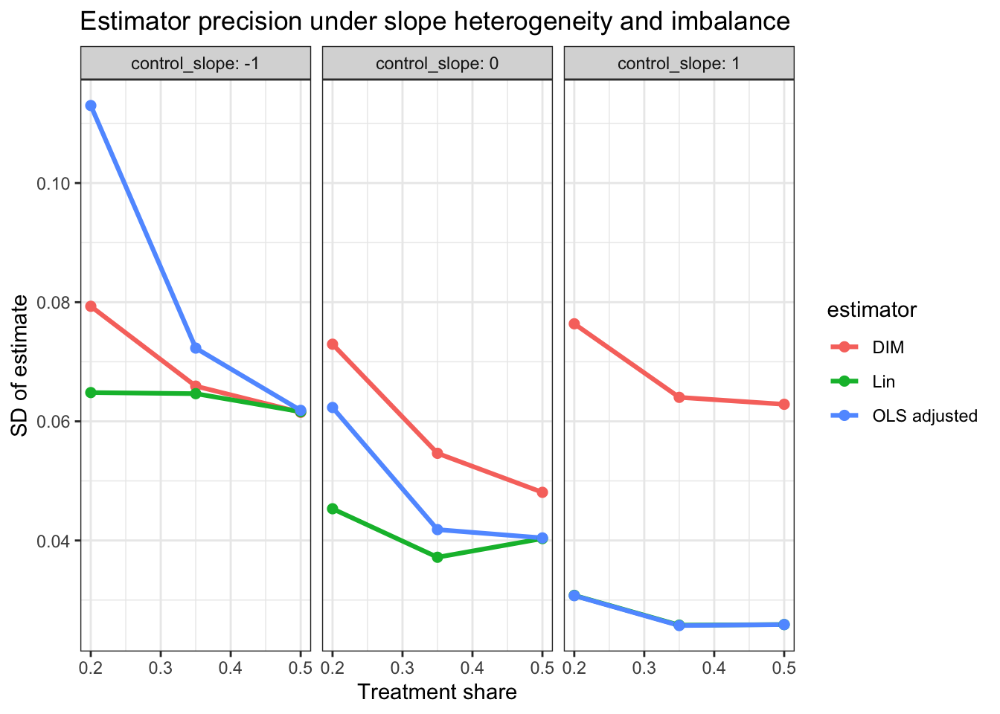
heterogeneous_slope_diagnosis$diagnosands_df |>
ggplot(aes(x = treatment_share, y = power, color = estimator)) +
geom_line(linewidth = 1.1) +
geom_point(size = 2) +
facet_wrap(~ control_slope, labeller = label_both) +
labs(
x = "Treatment share",
y = "Power") +
theme_bw() +
geom_hline(yintercept = 0.8, linetype = "dashed") +
annotate("text", x = Inf, y = 0.8, label = "Power = 0.8", hjust = 1.1, vjust = 1.5)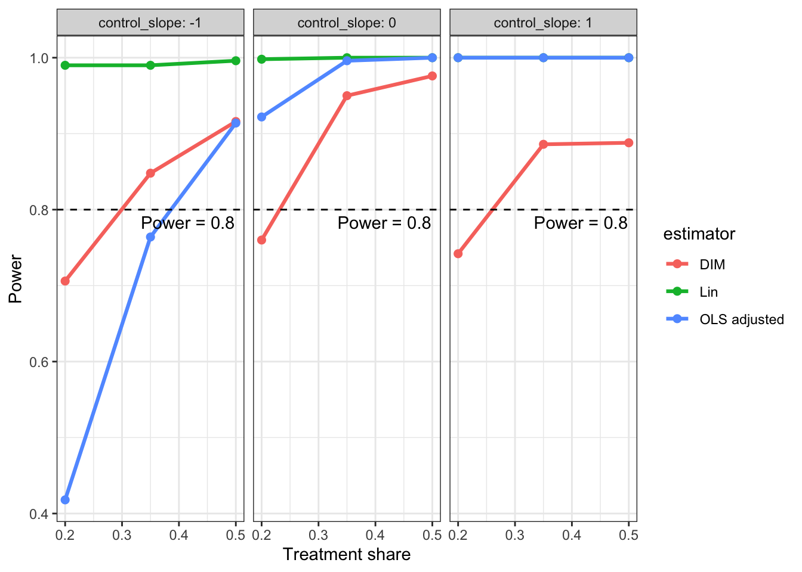
Block Randomization
block_N <- 200
tau <- 0.2
coef <- 2
block_dd <-
declare_model(
N = block_N,
gender = sample(c(0, 1), size = N, replace = TRUE),
U = rnorm(N, sd = 1),
potential_outcomes(Y ~ tau * Z + coef * gender + U)
) +
declare_inquiry(ATE = mean(Y_Z_1 - Y_Z_0)) +
declare_assignment(
Z = block_ra(blocks = gender)
) +
declare_measurement(Y = reveal_outcomes(Y ~ Z)) +
declare_estimator(Y ~ Z, inquiry = "ATE", label = "DIM") +
declare_estimator(
Y ~ Z,
covariates = ~ gender,
.method = lm_lin,
inquiry = "ATE",
label = "Lin"
)simple_dd <-
declare_model(
N = block_N,
gender = sample(c(0, 1), size = N, replace = TRUE),
U = rnorm(N, sd = 1),
potential_outcomes(Y ~ tau * Z + coef * gender + U)
) +
declare_inquiry(ATE = mean(Y_Z_1 - Y_Z_0)) +
declare_assignment(
Z = complete_ra(N = N, prob = 0.5)
) +
declare_measurement(Y = reveal_outcomes(Y ~ Z)) +
declare_estimator(Y ~ Z, inquiry = "ATE", label = "DIM") +
declare_estimator(
Y ~ Z,
covariates = ~ gender,
.method = lm_lin,
inquiry = "ATE",
label = "Lin"
)diagnosis_block <-
block_dd %>%
redesign(
block_N = seq(40, 200, 20),
coef = c(0.5, 1, 2, 4)
) %>%
diagnose_designs()diagnosis_simple <-
simple_dd %>%
redesign(
block_N = seq(40, 200, 20),
coef = c(0.5, 1, 2, 4)
) %>%
diagnose_designs()bind_rows(
diagnosis_block$diagnosands_df %>% mutate(design = "Blocked assignment"),
diagnosis_simple$diagnosands_df %>% mutate(design = "Complete randomization")
) %>%
ggplot(aes(x = block_N, y = sd_estimate, color = design)) +
geom_line(linewidth = 1) +
facet_wrap(~ estimator + coef, ncol = 4) +
labs(
x = "Sample size",
y = "SD of estimate",
color = "Design"
) +
theme_bw()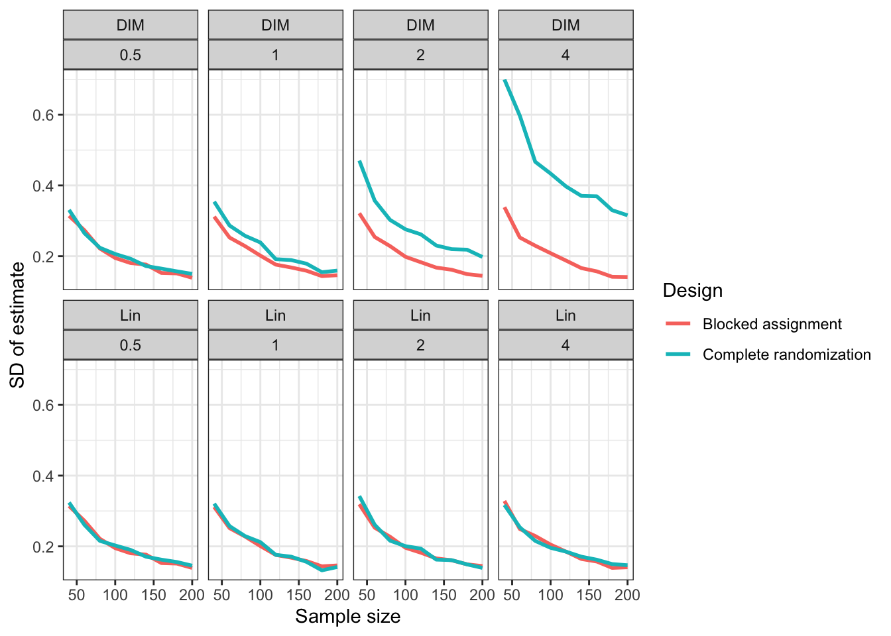
bind_rows(
diagnosis_block$diagnosands_df %>% mutate(design = "Blocked assignment"),
diagnosis_simple$diagnosands_df %>% mutate(design = "Complete randomization")
) %>%
ggplot(aes(x = block_N, y = power, color = design)) +
geom_line(linewidth = 1) +
facet_wrap(~ estimator + coef, ncol = 4) +
labs(
x = "Sample size",
y = "Power",
color = "Design"
) +
theme_bw() +
geom_hline(yintercept = 0.8, linetype = "dashed") +
annotate("text", x = Inf, y = 0.8, label = "Power = 0.8", hjust = 1.1, vjust = 1.5)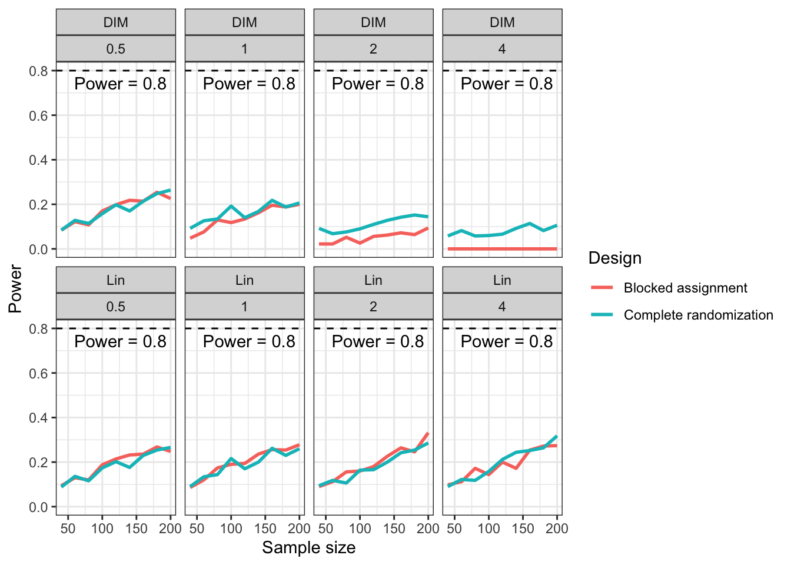
Factorial Design
N <- 800
tau_A <- 0.20
tau_B <- 0.20
tau_AB <- 0.20
factorial_dd <-
declare_model(
N = N,
X = rnorm(N),
U = rnorm(N),
Y_A_0_B_0 = 0 + U,
Y_A_1_B_0 = tau_A + U,
Y_A_0_B_1 = tau_B + U,
Y_A_1_B_1 = tau_A + tau_B + tau_AB + U
) +
declare_inquiry(
main_A = mean((Y_A_1_B_0 + Y_A_1_B_1)/2 - (Y_A_0_B_0 + Y_A_0_B_1)/2),
main_B = mean((Y_A_0_B_1 + Y_A_1_B_1)/2 - (Y_A_0_B_0 + Y_A_1_B_0)/2),
interaction = mean((Y_A_1_B_1 - Y_A_0_B_1) - (Y_A_1_B_0 - Y_A_0_B_0))
) +
declare_assignment(
A = complete_ra(N = N, prob = 0.5),
B = complete_ra(N = N, prob = 0.5)
) +
declare_measurement(
Y = reveal_outcomes(Y ~ A + B)
) +
declare_estimator(
Y ~ A + B + A:B,
model = lm_robust,
inquiry = c("main_A", "main_B", "interaction"),
term = c("A", "B", "A:B"),
label = "OLS factorial"
)factorial_diag <-
factorial_dd %>%
redesign(N = seq(500, 7000, by = 500)) %>%
diagnose_designs()factorial_diag$diagnosands_df %>%
ggplot(aes(x = N, y = power, color = term)) +
geom_line(linewidth = 1.1) +
geom_point(size = 2) +
labs(
title = "Power in a 2x2 factorial design",
x = "Sample size",
y = "Power",
color = "Estimand"
) +
theme_bw() +
geom_hline(yintercept = 0.8, linetype = "dashed") +
annotate("text", x = Inf, y = 0.8, label = "Power = 0.8", hjust = 1.1, vjust = -0.5)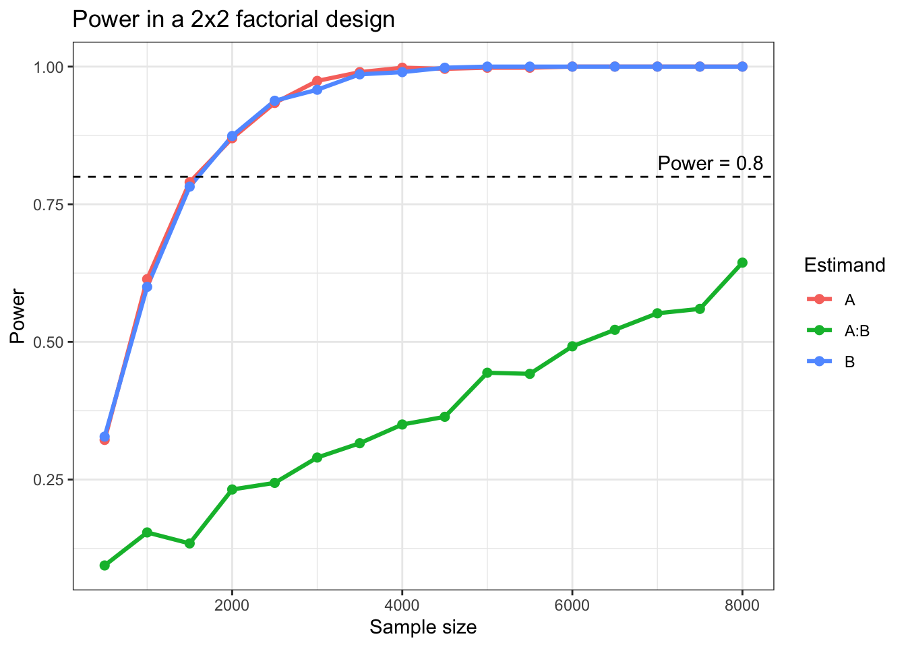
DeclareDesign in Observatinal Settings Example
N <- 500
tau <- 0.5
selection_strength <- 1.2
confounding_strength <- 1.0
obs_dd <-
declare_model(
N = N,
X = rnorm(N),
U = rnorm(N),
D = rbinom(N, 1, plogis(-0.3 + selection_strength * X)),
Y_D_0 = confounding_strength * X + U,
Y_D_1 = Y_D_0 + tau
) +
declare_inquiry(ATE = mean(Y_D_1 - Y_D_0)) +
declare_measurement(Y = reveal_outcomes(Y ~ D)) +
declare_estimator(Y ~ D,
.method = lm_robust,
inquiry = "ATE",
label = "Raw OLS") +
declare_estimator(Y ~ D + X,
.method = lm_robust,
inquiry = "ATE",
label = "Adjusted OLS")obs_diag <- diagnose_design(obs_dd)
obs_diag$diagnosands_df design inquiry estimator outcome term mean_estimand se(mean_estimand)
1 obs_dd ATE Adjusted OLS Y D 0.5 0
2 obs_dd ATE Raw OLS Y D 0.5 0
mean_estimate se(mean_estimate) bias se(bias) sd_estimate
1 0.4972098 0.004042912 -0.002790161 0.004042912 0.09646977
2 1.4283573 0.005407744 0.928357279 0.005407744 0.12021843
se(sd_estimate) rmse se(rmse) power se(power) coverage se(coverage)
1 0.003401879 0.09641363 0.003399552 1 0 0.966 0.008247583
2 0.004367159 0.93609337 0.005411013 1 0 0.000 0.000000000
n_sims
1 500
2 500obs_diag_grid <-
obs_dd %>%
redesign(
selection_strength = c(0.4, 0.8, 1.2, 1.6),
confounding_strength = c(0.5, 1.0, 1.5)
) %>%
diagnose_designs()obs_diag_grid$diagnosands_df %>%
ggplot(aes(x = selection_strength, y = bias, color = estimator)) +
geom_line(linewidth = 1.1) +
facet_wrap(~ confounding_strength, labeller = label_both) +
labs(
title = "Bias in an observational design",
x = "How strongly X predicts treatment",
y = "Bias"
) +
theme_bw()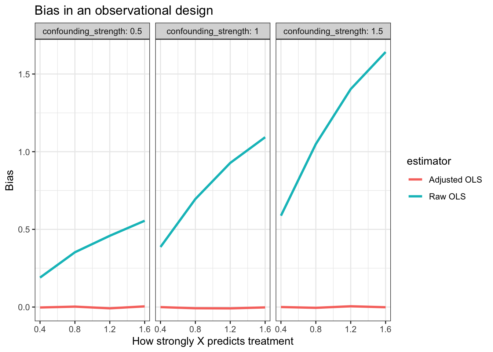